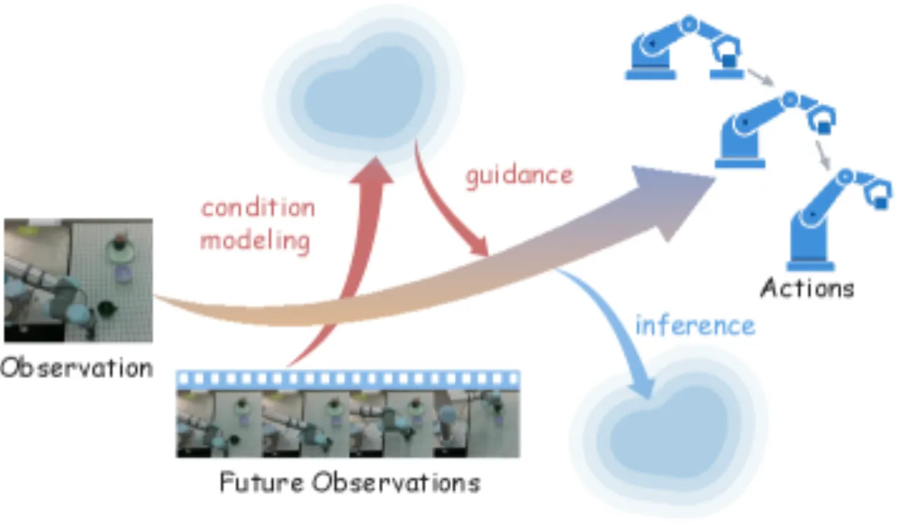
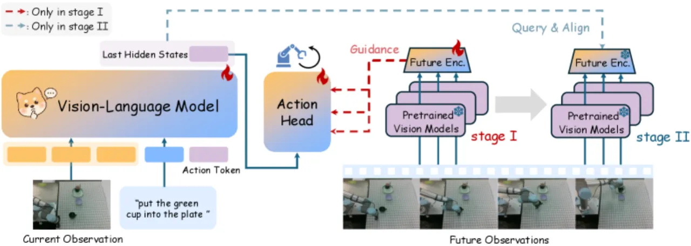
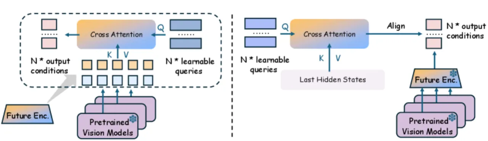
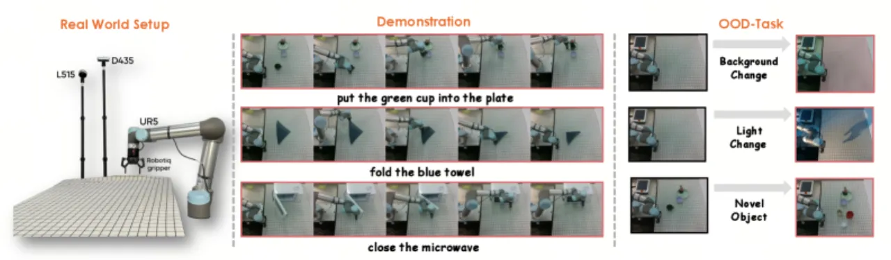
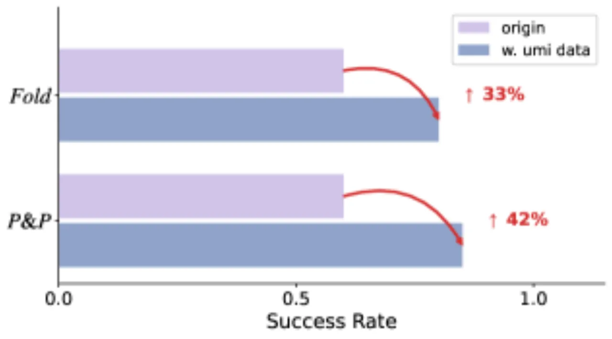

WoG 将未来观测映射到紧凑的"条件向量空间"，注入 VLA 动作推理流水线，在无需完整视频重建的前提下为精细操控提供预测性引导，同时支持从无标注人类操作视频中高效学习。
现有 VLA 模型在"未来预测"与"精细动作生成"之间存在根本矛盾：World Action Models 显式预测未来图像/视频，信息冗余大，难以应用于现实操控；Latent Action Models 将未来压缩为稀疏隐变量，精度不足，无法支撑需要厘米级控制的任务。
"WoG maps future observations into compact conditions by injecting them into the action inference pipeline." ——论文摘要

WoG 采用两阶段训练范式：Stage I 以真实未来帧为监督信号训练条件提取器；Stage II 冻结条件空间定义，训练 VLM 同步预测条件与动作，推理时不再依赖未来帧。

当前帧由 Prismatic VLM backbone 编码；未来帧由冻结的 DINOv2（语义特征）和 Wan VAE（生成特征）双路编码。可训练的 Q-Former 对两路特征进行跨注意力查询，得到 D=32 维条件向量。DiT 动作头以当前观测和条件向量为条件，通过 flow-matching 目标生成 16 步动作序列。训练损失：
LI = Eτ,A [‖vθ(Aτ, τ, z, Oc) − v*‖²₂]
默认超参数：预测视野 16 步动作、均匀采样 4 帧未来观测、N=16 个可学习查询。
Stage II 冻结 Q-Former 和视觉基础模型（定义稳定的目标条件空间），训练 VLM 同时输出：(1) 预测的条件向量（使用余弦相似度损失与 Q-Former 输出对齐）；(2) 动作（flow-matching）。联合损失：
LII = Eτ,A [‖vθ(Aτ, τ, z) − v*‖²₂] + 1 − S[Oc, fq(O, l)]
推理时 VLM 直接从当前帧预测条件向量，无需真实未来帧。

WoG 提供两种策略将无标注人类视频纳入训练：(1) Stage I 使用少量带动作标注的人类子集，Stage II 用无标注大规模视频；(2) 直接在 Stage II 对无标注人类视频进行训练（无需动作标签）。两者均利用 Stage II 的余弦相似度损失对条件向量进行自监督，从而吸收人类操作知识。
在 SimplerEnv 仿真环境（Google Robot + WidowX）和真实机器人平台（Close Microwave / Pick & Place / Fold Towel）上与 Moto、ViPRA、UniVLA、VPP、DeFI 等 baseline 进行对比。成功率（%）为主要指标。
| 模型 | Google Robot 平均 | WidowX 平均 |
|---|---|---|
| DeFI | 51.2% | — |
| Moto | 59.2% | — |
| UniVLA | — | 45.6% |
| ViPRA | — | 62.5% |
| WoG（ours） | 78.0% | 63.5% |
Google Robot 子任务：Pick Coke 89.0%（WoG）vs. 74.0%（Moto）；Move Near 82.5% vs. 60.4%；Open/Close Drawer 62.5% vs. 43.1%。

| 任务 | UniVLA（ID） | VPP（ID） | WoG（ID） |
|---|---|---|---|
| Close Microwave | 80% | 90% | 100% |
| Pick and Place | 25% | 55% | 60% |
| Fold Towel | 20% | 45% | 60% |
分布外（OOD）鲁棒性：Pick & Place 新物体场景 WoG 60→40%，VPP 55→15%；Fold Towel 光照变化 WoG 60→35%，VPP 45→20%。WoG 在多种 OOD 设置下均保持更高鲁棒性。
Future Encoder 消融（Stage I）：带 Future Encoder 的 WoG 在 Google Robot 达到 82.0%，移除后降至 75.1%；WidowX 86.4% vs. 75.0%。
训练阶段消融：完整两阶段 WoG（ID：100% / 60% / 60%）显著优于 WoG w/o cotrain（95% / 45% / 30%）和 Vanilla VLA（90% / 45% / 40%）。
编码器配置：WoG (dino-vae) 在轨迹规划任务（Google Robot）得 70.9%，WoG (dino-siglip) 在空间精度任务（WidowX）得 63.5%，各有侧重。

WoG 在需要精确相对位置估计的任务（如精细叠放、抽屉开关）上提升幅度"comparatively smaller"，作者归因于"limited spatial resolution of the current backbone and inherent difficulty of modeling fine-grained geometry through current dynamic prediction alone"。
人类视频对 Pick & Place 任务有明显提升，但对形变物体操控（Fold Towel）效果不稳定，说明人机操作的相似性存在任务依赖性，不能简单假设人类数据在所有任务上均有益。
作者在结论中指出，未来工作应聚焦于"more expressive and efficient condition representations to better handle scenarios with strong spatial or action constraints"，暗示当前 D=32 维条件向量在强几何约束场景下存在信息瓶颈。